Shotgun Metagenome Sequencing Analysis Report (Mapping-Kraken)
| Contract ID | HXXXSCXXXXXX |
| Contract Name | Metagenomic Readsmapping Analysis |
| Batch ID | X101SCXXXXXXXX-XXX-XXXX |
| Report Time | 2024-10-24 |
1 Introduction
Diverse communities of microbes thrive in environments ranging from the human gut (Walter et al., 2011), to the mud in deep sea, to conventionally inhospitable habitats such as acid mine runoff and geothermal hot springs. Environmental DNA sequencing has revealed the expansive biodiversity of microorganisms and clarified the relationship between host-associated microbial communities and host phenotype. Studies of cultured microbes reveal that they are critical components of these environments and provide essential ecosystem services (van der Heijden et al., 2008). Unfortunately, most microbes are notoriously difficult to culture in the laboratory. Therefore, vast amounts of organismal and functional novelty remain to be explored.
Metagenomics, or the study of microbial communities, takes advantage of advances in sequencing technology and analysis methods to comprehensively examine microbial communities directly from their natural habitats, which potentially may reveal novel content (Handelsman et al., 1998). Metagenomic sequencing provides insights into species biodiversity, functions, and pathways present in various microbiomes.
Compared with traditional assembly-based metagenomic processes, the read-based metagenomic workflow directly aligns quality-controlled reads to species (Kraken), independent of assembled sequences. This method rapidly provides abundance information for species and functions, enabling large-scale microbial community studies.
The workflow is shown as follows:

Figure 1 Project Workflow
2 Library Construction and Sequencing
The genomic DNA was randomly sheared into shorter fragments. The obtained fragments were then end-repaired, A-tailed, and further ligated with Illumina adapters. The resulting fragments with adapters were size selected, PCR amplified unless otherwise specified as PCR-free, before proceeding for purification.
The experimental procedures of DNA library preparation are shown as follows :
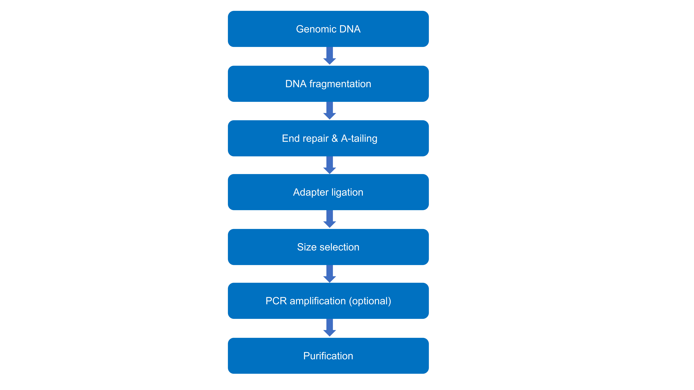
Figure 2 Workflow of Library Construction
The library was quantified through Qubit and qPCR, and size distribution detected with fragment analyzer. Quantified libraries were pooled and sequenced on Illumina platforms according to the effective library concentration and required data amount.
The methods involved in the research are as follows:methods.
3 Bioinformatics Analysis Pipeline
The raw data obtained through sequencing contains a certain proportion of low-quality data. Quality control and host filtration were performed on the raw data to obtain clean data, which ensures that the results from subsequent analysis will be accurate and reliable.
Species annotation was performed using the Kraken2 software, where quality-controlled sequences from each metagenomic sample were aligned to the Kraken2 database to determine the species composition of the microbiota. The Bracken (Bayesian Reestimation of Abundance with KrakEN) software was then used to calculate the relative abundance of each sample.
Functional annotation was performed by aligning the sequences against the Uniprot database using Diamond software. The functional annotations for KEGG, GO, eggNOG, and Pfam were obtained based on the correspondence between the UniRef IDs and these functional databases. The relative abundance of each function for each sample was then calculated.
Through the species abundance and functional annotations, analyses including species and function bar plots and clustering heatmaps were performed. If there are more than two samples, PCA, PCoA, and NMDS were conducted. For grouped data, Anosim, MetaGenomeSeq, and LEfSe were used to explore differences in species composition and functional composition among samples.
Information analysis workflow is as shown in the figure:
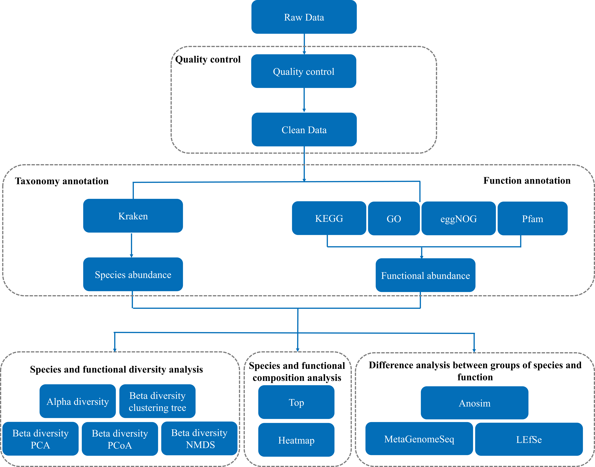
Figure 3 Information Analysis Workflow Diagram
Notes: When the number of samples is less than 3, PCA, PCoA, NMDS, clustering analysis and abundance heatmap analysis cannot be carried out. When the number of biological repeats in the group is less than 3, statistical analysis such as Anosim, MetaGenomeSeq, and LEfSe are statistically meaningless and the analysis cannot be conducted.
4 Analysis Results
4.1 Sequencing Data Processing
The protocols of data pre-processing are as follows:
1. when either one read contains adapter contamination,the paired read will be discarded.
2. when either one read contains more than 10 percent uncertain nucleotides,the paired read will be discarded.
3. when either one read contains more than 50 percent low quality nucleotides (base quality less than 5),the paired read will be discarded.
Table 4.1 QC statistics
| SampleID | Raw_Base(G) | Clean_Base(G) | Clean_Q20(%) | Clean_Q30(%) | Clean_GC(%) | Effective(%) |
|---|---|---|---|---|---|---|
| A1 | 5.91 | 5.87 | 97.66 | 93.36 | 47.96 | 99.36 |
| A2 | 8.79 | 8.71 | 97.84 | 93.88 | 50.14 | 99.17 |
| A3 | 6.66 | 6.61 | 97.82 | 93.76 | 45.10 | 99.27 |
| A4 | 6.04 | 5.91 | 97.71 | 93.59 | 48.36 | 97.85 |
| A5 | 6.83 | 6.78 | 97.91 | 93.99 | 47.22 | 99.31 |
| A6 | 6.57 | 6.50 | 97.95 | 94.08 | 47.05 | 98.90 |
| A7 | 6.59 | 6.52 | 97.93 | 94.11 | 46.04 | 98.87 |
| A8 | 7.14 | 7.01 | 98.73 | 96.25 | 49.12 | 98.16 |
| A9 | 6.98 | 6.81 | 98.83 | 96.55 | 42.86 | 97.46 |
| A10 | 6.10 | 5.98 | 98.53 | 95.79 | 53.42 | 98.02 |
| A11 | 5.93 | 5.87 | 97.24 | 92.22 | 56.70 | 98.91 |
| A12 | 7.03 | 6.97 | 97.29 | 92.39 | 57.48 | 99.19 |
| A13 | 6.39 | 6.29 | 97.56 | 93.20 | 55.04 | 98.47 |
| A14 | 6.62 | 6.58 | 97.82 | 93.73 | 43.66 | 99.34 |
| A15 | 6.47 | 6.26 | 97.39 | 93.20 | 59.08 | 96.70 |
| A16 | 6.37 | 6.24 | 98.31 | 95.24 | 57.10 | 97.96 |
| B1 | 7.98 | 7.75 | 98.64 | 96.04 | 54.91 | 97.16 |
| B4 | 6.35 | 6.00 | 98.81 | 96.51 | 46.78 | 94.62 |
| B3 | 6.73 | 6.54 | 97.74 | 93.64 | 47.73 | 97.17 |
| B2 | 6.34 | 6.24 | 97.64 | 93.24 | 47.09 | 98.41 |
- Raw_Base(G)：Raw sequenced data.
- Clean_Base(G)：Clean data obtained after data filtering.
- Clean_Q20(%)：Percentage of bases with a quality score over 20, indicating an error rate less than 1%.
- Clean_Q30(%)：Percentage of bases with a quality score over 30, corresponding to an error rate less than 0.1%.
- Clean_GC(%)：Calculated an the total count of guanine (G) and cytosine (C) bases devided by the total count of clean bases, expressed as a percentage.
- Effective(%)：Represents the ratio of Clean Data (post-quality control data) to Raw Data, expressed as a percentage.
- NonHost_Base(G)：The total count of clean bases remaining after the removal of host-specific sequences, measured in gigabases (G).
Results directory: QC_result: result/01.QC/QC_summary.xls
4.2 Taxonomy and Function Annotation
4.2.1 Kraken Taxonomic Annotation
Kraken (Wood DE et al., 2019)(https://benlangmead.github.io/aws-indexes/k2) is a high-performance tool that assigns taxonomic labels to short DNA sequences using a compact and efficient k-mer indexing strategy, achieving high speed and categorizing sequences at the most specific taxonomic level possible through a Lowest Common Ancestor (LCA) algorithm. Kraken utilizes a built-in database (https://ccb.jhu.edu/software/kraken2/) for taxonomy assignment.
Bracken (Bayesian Reestimation of Abundance with KrakEN) is a complementary tool designed to provide more accurate species abundance estimates from Kraken's classification results.Bracken re-estimates the abundance of each taxonomic unit using Bayesian methods, based on the k-mer distributions identified by Kraken.By considering the varying k-mer coverage and the number of detected sequences, Bracken improves the accuracy of species abundance estimates.
4.2.1.1 Relative Abundance of Taxonomic Annotation
Based on the abundance table of taxonomic level, the top 10 taxa were picked out. Bar charts show the relative taxonomic abundance of each sample (or group).


Figure 4.1 The Barplot of Relative Abundance
Notes: The bar chart of relative abundance represents sample (or group) names on the horizontal axis and the proportional relative abundance on the vertical axis. Each color block corresponds to a taxonomic level as shown in the legend.
Results directory:
Taxonomic annotation visualization: result/02.Annotation/Taxonomic/Top_{sample, group1}/
4.2.1.2 Kraken Taxonomic Abundance Heatmap
The abundance distribution of the top 35 dominant taxonomic level of all samples was displayed in the abundance heatmap.

Figure 4.2 Abundance Clustering Heatmap
Notes: The X-axis denotes the sample (or group) names. The Y-axis illustrates taxonomic level information. The clustering tree is situated on the left-hand side of the chart. The values depicted on the heatmap represent the Z-score, which is derived after normalizing the relative abundance of annotation results for each line. The color legend positioned on the right-hand side of the figure delineates the correspondence between heat map colors and Z-values. Notably, when the raw score falls below the mean value, "Z" assumes a negative value, whereas it is positive when surpassing the mean.
Results directory：Heatmap of Relative abundance：result/02.Annotation/*/Heatmap*
4.2.3 KEGG Function Annotation
KEGG (Kanehisa M et al., 2000) is a database resource for understanding high-level functions and utilities of the biological system, from the cell to the organism and the ecosystem. Functional studies are accomplished through molecular-level information, especialy through large-scale molecular datasets generated by genome sequencing and other high-throughput experimental technologies.
The KO (KEGG Orthology) database is a database of molecular functions represented in terms of functional orthologs.
The EC (KEGG ENZYME) is an implementation of the Enzyme Nomenclature (EC number system) produced by the IUBMB/IUPAC Biochemical Nomenclature Committee. KEGG ENZYME is based on the ExplorEnz database at Trinity College Dublin and is maintained in the KEGG relational database with additional annotation of reaction hierarchy and sequence data links.
The Pathway (KEGG PATHWAY) is a collection of manually drawn pathway maps representing our knowledge of molecular interaction, reaction, and relation networks.
The KEGG MODULE database consists of both KEGG modules identified by M numbers and KEGG reaction modules identified by RM numbers, which are manually defined functional units of gene sets and reaction sets, respectively. KEGG modules can be further divided into pathway modules and signature modules. For example, pathway modules are functional units of gene sets within metabolic pathways and include molecular complexes. Whereas, signature modules are functional units of gene sets that characterize phenotypic features. Last but not least, reaction modules are functional units of successive reaction steps within metabolic pathways.
The UniRef90 gene family IDs were obtained by aligning the sequences against the Uniprot database using the Diamond software.The correspondence between UniRef90 IDs and KO in the KEGG database was used to derive KEGG functional annotation results.
4.2.2.1 Relative Abundance of KEGG Annotation
Based on the abundance table of KEGG orthology (KEGG enzyme/KEGG pathway/KEGG module), the top 10 KEGG orthologys were picked out. Bar charts show the relative KEGG orthology abundance of each sample (or group).
Figure 4.3 The Barplot of Relative Abundance
Notes: The bar chart of relative abundance represents sample (or group) names on the horizontal axis and the proportional relative abundance on the vertical axis. Each color block corresponds to a KEGG orthology (KEGG enzyme/KEGG pathway/KEGG module) as shown in the legend.
Results directory:
KEGG annotation visualization: result/02.Annotation/KEGG/Top_{sample, group1}/
4.2.2.2 KEGG Abundance Heatmap
The abundance distribution of the top 35 dominant KEGG orthology (KEGG enzyme/KEGG pathway/KEGG module) of all samples was displayed in the abundance heatmap.

Figure 4.4 Abundance Clustering Heatmap
Notes: The X-axis denotes the sample (or group) names. The Y-axis illustrates KEGG orthology (KEGG enzyme/KEGG pathway/KEGG module) information. The clustering tree is situated on the left-hand side of the chart. The values depicted on the heatmap represent the Z-score, which is derived after normalizing the relative abundance of annotation results for each line. The color legend positioned on the right-hand side of the figure delineates the correspondence between heat map colors and Z-values. Notably, when the raw score falls below the mean value, "Z" assumes a negative value, whereas it is positive when surpassing the mean.
Results directory：Heatmap of Relative abundance：result/02.Annotation/*/Heatmap*
4.2.4 GO Functional Annotation
GO (Gene Ontology) (Harris MA et al.,2004) is a database (https://geneontology.org/docs/ontology-documentation/) established by the Gene Ontology Consortium, aiming to provide a comprehensive resource for the functional annotation of genes and proteins across various species. It serves to define and describe gene and protein functions and is continuously updated as research progresses.
The fundamental concept in GO is the "GO IDs," which are used to describe characteristics of genes and gene products. In other words, the GO database assigns labels or tags to each gene to enable researchers to quickly locate their target genes based on these labels. Additionally, these terms are categorized into three different types, referred to as the three main branches of GO: Cellular Component (CC), Biological Process (BP), and Molecular Function (MF).
The UniRef90 gene family IDs were obtained by aligning the sequences against the Uniprot database using the Diamond software.The correspondence between UniRef90 IDs and GO IDs in the GO database was utilized to generate GO functional annotation results.
4.2.3.1 Relative Abundance of GO Annotation
Based on the abundance table of gene ontology, the top 10 gene ontologys were picked out. Bar charts show the relative gene ontology abundance of each sample (or group).
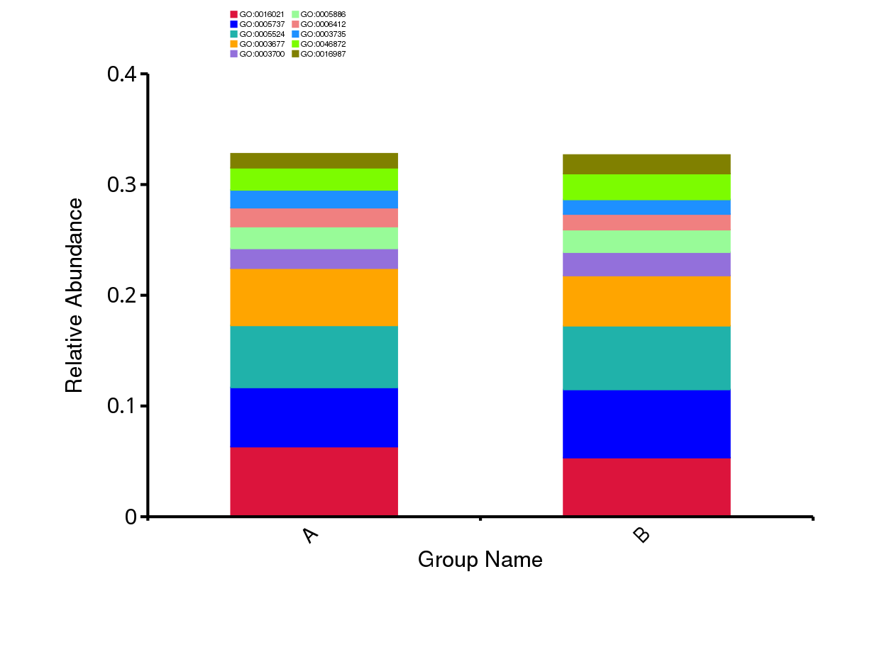
Figure 4.5 The Barplot of Relative Abundance
Notes: The bar chart of relative abundance represents sample (or group) names on the horizontal axis and the proportional relative abundance on the vertical axis. Each color block corresponds to a gene ontology as shown in the legend.
Results directory:
GO annotation visualization: result/02.Annotation/GO/Top_{sample, group1}/
4.2.3.2 GO Abundance Heatmap
The abundance distribution of the top 35 dominant gene ontologys of all samples was displayed in the abundance heatmap.
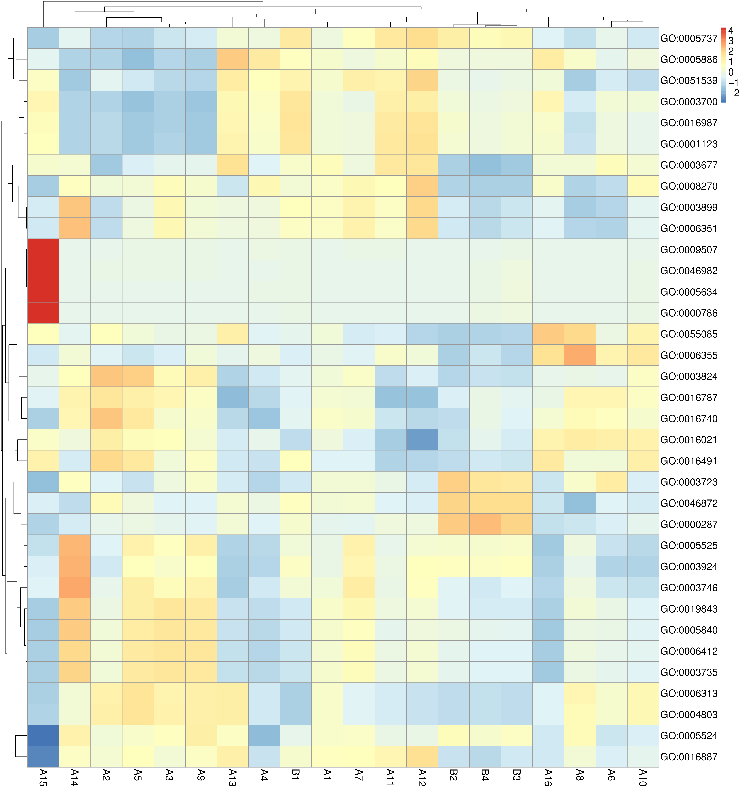
Figure 4.6 Abundance Clustering Heatmap
Notes: The X-axis denotes the sample (or group) names. The Y-axis illustrates gene ontologys information. The clustering tree is situated on the left-hand side of the chart. The values depicted on the heatmap represent the Z-score, which is derived after normalizing the relative abundance of annotation results for each line. The color legend positioned on the right-hand side of the figure delineates the correspondence between heat map colors and Z-values. Notably, when the raw score falls below the mean value, "Z" assumes a negative value, whereas it is positive when surpassing the mean.
Results directory：Heatmap of Relative abundance：result/02.Annotation/*/Heatmap*
4.2.5 eggNOG Functional Annotation
The eggNOG (Huerta-Cepas J et al., 2019) is a public database (http://eggnog5.embl.de/#/app/home) of orthology relationships, gene evolutionary histories and functional annotations.
An Orthologous Group (OG) is defined as a cluster of three or more homologous sequences that diverge from the same speciation event.
The UniRef90 gene family IDs were obtained by aligning the sequences against the Uniprot database using the Diamond software.The correspondence between UniRef90 IDs and eggNOG database Orthologous Groups (OG) was utilized to derive eggNOG functional annotation results.
4.2.4.1 Relative Abundance of eggNOG Annotation
Based on the abundance table of orthologous group, the top 10 orthologous groups were picked out. Bar charts show the relative orthologous group abundance of each sample (or group).
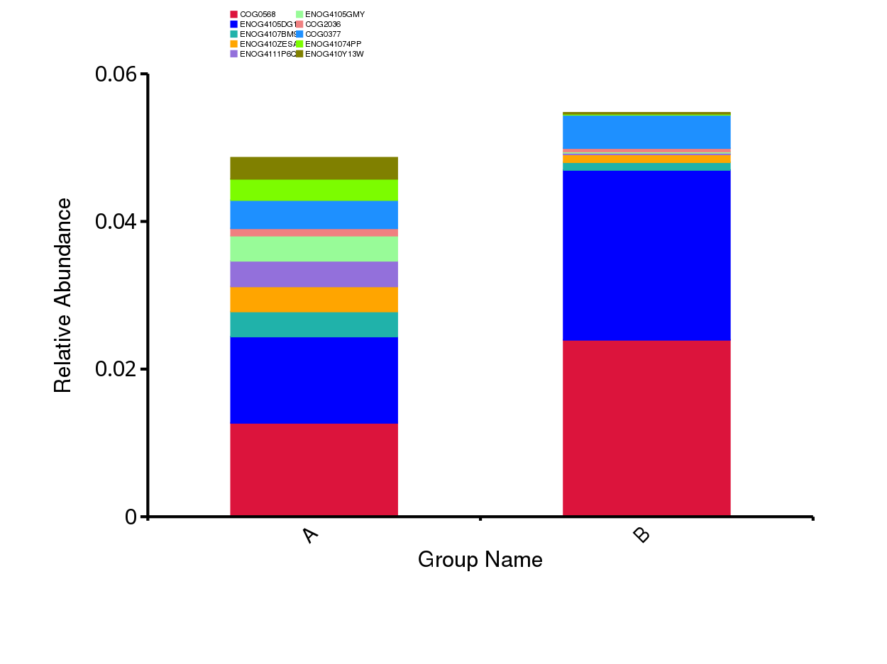
Figure 4.7 The Barplot of Relative Abundance
Notes: The bar chart of relative abundance represents sample (or group) names on the horizontal axis and the proportional relative abundance on the vertical axis. Each color block corresponds to a orthologous group as shown in the legend.
Results directory:
eggNOG annotation visualization: result/02.Annotation/eggNOG/Top_{sample, group1}/
4.2.4.2 eggNOG Abundance Heatmap
The abundance distribution of the top 35 dominant orthologous groups of all samples was displayed in the abundance heatmap.
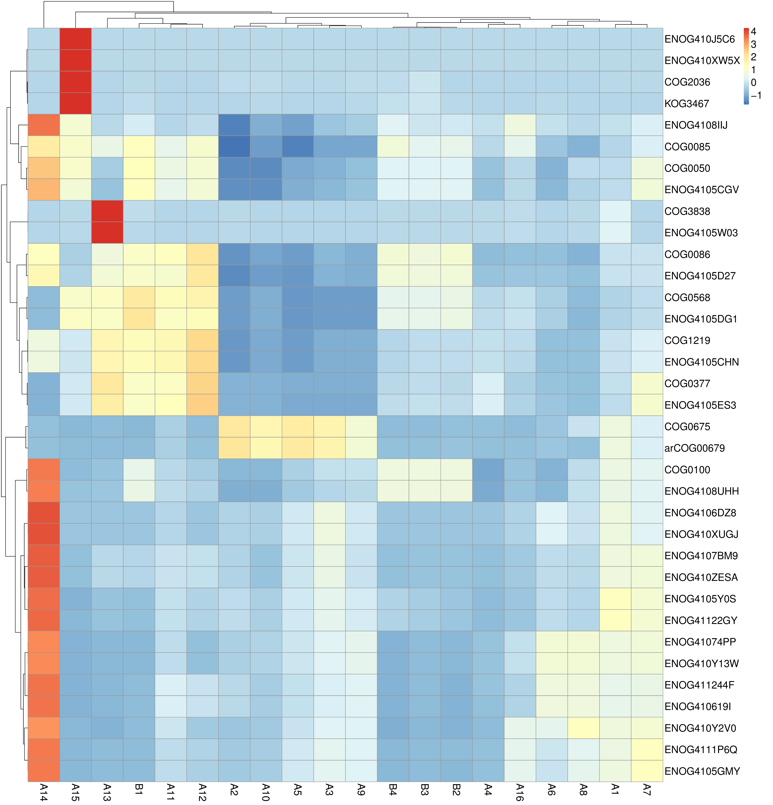
Figure 4.8 Abundance Clustering Heatmap
Notes: The X-axis denotes the sample (or group) names. The Y-axis illustrates orthologous groups information. The clustering tree is situated on the left-hand side of the chart. The values depicted on the heatmap represent the Z-score, which is derived after normalizing the relative abundance of annotation results for each line. The color legend positioned on the right-hand side of the figure delineates the correspondence between heat map colors and Z-values. Notably, when the raw score falls below the mean value, "Z" assumes a negative value, whereas it is positive when surpassing the mean.
Results directory：Heatmap of Relative abundance：result/02.Annotation/*/Heatmap*
4.2.6 Pfam Functional Annotation
Pfam (Mistry J et al.,2021) is a protein family database (http://pfam.xfam.org) where each protein family is represented by multiple sequence alignments and hidden Markov models. Proteins are generally composed of one or more functional regions, often referred to as domains. Different protein domains determine different protein functions, making the identification of protein domains crucial for protein function analysis.
Pfam (protein families) ID are categorized into six types: Family (a collection of related protein regions), Domain (a structural unit), Repeat (short, unstable units that form stable structures when present in multiple copies), Motifs (short units outside the globular domain), Coiled-Coil (regions with 2-7 α-helices forming a coiled-coil structure), and Disordered (conserved regions with compositional bias and/or intrinsic disorder). All protein families are further classified into different clan categories.
The UniRef90 gene family IDs were obtained by aligning the sequences against the Uniprot database using the Diamond software. The correspondence between UniRef90 gene IDs and Pfam database Pfam IDs was utilized to derive Pfam functional annotation results.
4.2.5.1 Relative Abundance of Pfam Annotation
Based on the abundance table of protein families, the top 10 protein families were picked out. Bar charts show the relative protein families abundance of each sample (or group).
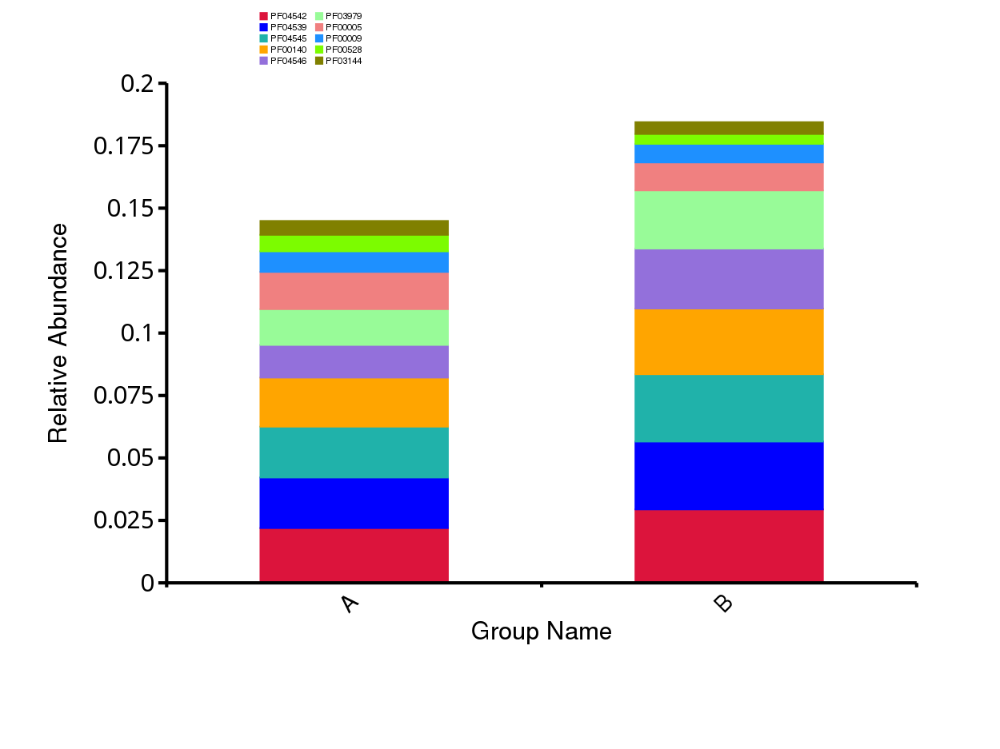
Figure 4.9 The Barplot of Relative Abundance
Notes: The bar chart of relative abundance represents sample (or group) names on the horizontal axis and the proportional relative abundance on the vertical axis. Each color block corresponds to a protein families as shown in the legend.
Results directory:
Pfam annotation visualization: result/02.Annotation/Pfam/Top_{sample, group1}/
4.2.5.2 Pfam Abundance Heatmap
The abundance distribution of the top 35 dominant protein families level of all samples was displayed in the abundance heatmap.
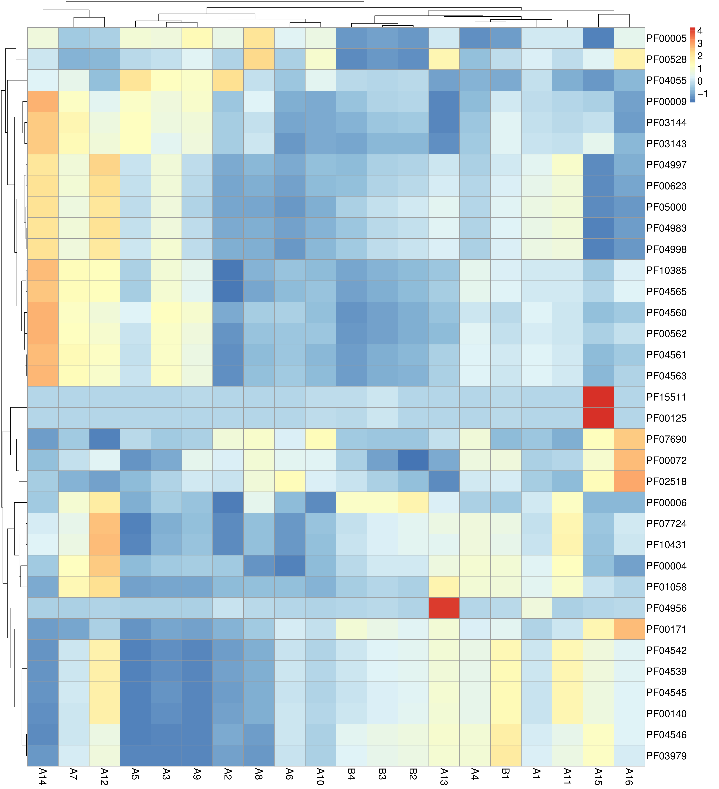
Figure 4.10 Abundance Clustering Heatmap
Notes: The X-axis denotes the sample (or group) names. The Y-axis illustrates protein families level information. The clustering tree is situated on the left-hand side of the chart. The values depicted on the heatmap represent the Z-score, which is derived after normalizing the relative abundance of annotation results for each line. The color legend positioned on the right-hand side of the figure delineates the correspondence between heat map colors and Z-values. Notably, when the raw score falls below the mean value, "Z" assumes a negative value, whereas it is positive when surpassing the mean.
Results directory：Heatmap of Relative abundance：result/02.Annotation/*/Heatmap*
4.3 Alpha Diversity Analysis
Alpha diversity is mainly used to study the diversity of communities within a specific habitat (or sample), which can be assessed by evaluating a series of Alpha diversity indices to obtain information on the richness, diversity, and other characteristics of species and functions in the environmental community.
Through the analysis of Alpha diversity indices, information on species richness, diversity, and coverage in the community can be obtained. By using inter-group difference testing methods, one can detect whether there are significant differences in Alpha diversity index values between every two or more groups.
4.3.1 Kraken Alpha Diversity Analysis
4.3.1.1 Alpha diversity Indices
Starting from the annotated Reads Number table of taxonomic level, calculate the richness and diversity of each sample (or group).The table illustrates an example with only species level.
Table 4.2 Statistical Results of Alpha Diversity Analysis
| Sample | ACE | chao1 | shannon | simpson | observed_species | goods_coverage |
|---|---|---|---|---|---|---|
| A1 | 9797 | 9797 | 6.9554016196069 | 0.99118757820437 | 9797 | 1 |
| A2 | 9874 | 9874 | 5.918976153022 | 0.953362672944808 | 9874 | 1 |
| A3 | 9685 | 9685 | 6.2271007992128 | 0.977970478804187 | 9685 | 1 |
| A4 | 9244 | 9244 | 5.06608902156411 | 0.926605551345513 | 9244 | 1 |
| A5 | 9528 | 9528 | 5.90939646030354 | 0.961113425091314 | 9528 | 1 |
| A6 | 9330 | 9330 | 4.79630092002037 | 0.932799089945939 | 9330 | 1 |
| A7 | 9738 | 9738 | 7.21855082834937 | 0.99423938862972 | 9738 | 1 |
| A8 | 9172 | 9172 | 4.672549093348 | 0.932261333804363 | 9172 | 1 |
| A9 | 9500 | 9500 | 6.64986570231088 | 0.987722139783447 | 9500 | 1 |
| A10 | 9552 | 9552 | 5.92608178495569 | 0.97243764090941 | 9552 | 1 |
| A11 | 9415 | 9415 | 7.1701169772302 | 0.99046098004694 | 9415 | 1 |
| A12 | 9377 | 9377 | 7.8851757826653 | 0.99775649457728 | 9377 | 1 |
| A13 | 9425 | 9425 | 7.57126976535634 | 0.997304195627398 | 9425 | 1 |
| A14 | 9587 | 9587 | 6.55378290752582 | 0.983878298714022 | 9587 | 1 |
| A15 | 8258 | 8258 | 6.34399935113835 | 0.987426933482737 | 8258 | 1 |
| A16 | 9011 | 9011 | 6.17583919776803 | 0.979413952415999 | 9011 | 1 |
| B1 | 10005 | 10005 | 7.87640429605385 | 0.998685366236998 | 10005 | 1 |
| B4 | 9698 | 9698 | 6.61997696075571 | 0.990778292448831 | 9698 | 1 |
| B3 | 9752 | 9752 | 6.59034306954981 | 0.988571605308789 | 9752 | 1 |
| B2 | 9649 | 9649 | 6.33831877208814 | 0.982355751302111 | 9649 | 1 |
- ACE: Estimating number of species in the community.
- chao1: The total number of species contained in the community samples was estimated.
- shannon: The total number of taxa in the samples and their percentage. The higher the community diversity and the more evenly distributed the species, the greater the shannon index.
- simpson: Characterizes the diversity and evenness of species distribution within a community.
- observed: Number of directly observed species.
- goods_coverage: Sequencing depth index coverage, the higher the sequencing coverage, the larger the index.
Results directory: Alpha Diversity indices statistics: result/03.Alphadiversity/*/Alpha_index_table/*_Alphaindex.*.xls
4.3.1.2 Alpha Diversity Indices Boxplot
Based on the Alpha Diversity table of taxonomic level, the box of the alpha diversity was displayed.The figure illustrates an example with only one index.
Figure 4.11 Boxplot of Alpha Diversity Indices
Notes: The box plot is a graphical representation of data distribution that displays the median, quartiles, and outliers, providing a visual understanding of the data spread and extreme values. The X-axis indicates the group of samples, while the Y-axis represents the alpha diversity.
Results directory: Boxplot of Alpha Diversity Indices: result/03.Alphadiversity/*/Alpha_box_group1/*/*png
4.3.1.3 Biodiversity curves
Rarefaction Curves is widely used for indicating the biodiversity of the samples. A rarefaction curve is created by selecting randomly certain amount of sequencing data from the samples, then counting the number of the species they represent. The Rarefaction curves can directly reflect the rationality of the sequencing data volume and indirectly reflect the richness of microbial community in the samples. If the curve is steep, it means that a lot of the species remain to be discovered. If the curve becomes flatter, a credible number of samples have been taken, which means only the scarce species remain to be sampled.
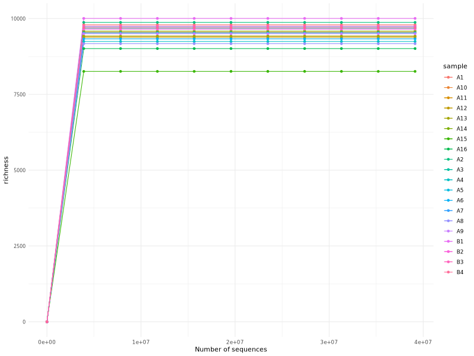
Figure 4.12 Rarefaction Curves
Notes: in the Rarefaction curves, each curve represents a sample, and can be colored and shaped by each sample name supplied in the mapping file. The sequence number is on the X-axis and the richness is on the Y-axis.
Results directory : result/03.Alphadiversity/Taxonomy/Alpha_index_rare/richness_species.{png,pdf}
4.3.2 KEGG Alpha Diversity Analysis
4.3.2.1 Alpha diversity Indices
Starting from the annotated Reads Number table of KEGG orthology (KEGG enzyme/KEGG pathway/KEGG module), calculate the richness and diversity of each sample (or group).The table illustrates an example with only KEGG orthology.
Table 4.3 Statistical Results of Alpha Diversity Analysis
| Sample | ACE | chao1 | shannon | simpson | observed_species | goods_coverage |
|---|---|---|---|---|---|---|
| A1 | 4430.3525942383 | 4429.61165048544 | 7.14441862959079 | 0.996955085872744 | 4413 | 1 |
| A2 | 4382.7213176498 | 4384.71929824561 | 7.17668488234729 | 0.998664329854093 | 4357 | 1 |
| A3 | 4132.69948108767 | 4131.61325966851 | 7.13587262343374 | 0.998562899818096 | 4086 | 1 |
| A4 | 5910.08756300958 | 5894.8901734104 | 7.30911051886687 | 0.997839725664904 | 5812 | 1 |
| A5 | 3181.98796815174 | 3185.28037383178 | 6.98823263421771 | 0.998483536213804 | 3155 | 1 |
| A6 | 5057.24347144151 | 5057.69461077844 | 7.03419307603358 | 0.996994541455884 | 5025 | 1 |
| A7 | 4151.01396945636 | 4148.30827067669 | 7.06410191279746 | 0.996827030345728 | 4128 | 1 |
| A8 | 5214.30233380787 | 5211.26086956522 | 7.16137262999174 | 0.997880779276694 | 5186 | 1 |
| A9 | 3316.14761773514 | 3317.9406779661 | 7.18603855287318 | 0.998626378227257 | 3284 | 1 |
| A10 | 5549.92035163664 | 5555.90243902439 | 7.39478331725361 | 0.998571191685973 | 5485 | 1 |
| A11 | 4958.32563513051 | 4959.97093023256 | 6.8374682224941 | 0.993656119169964 | 4927 | 1 |
| A12 | 3878.24969907535 | 3875.15178571429 | 6.63937952292909 | 0.99288783320888 | 3871 | 1 |
| A13 | 3785.24161304246 | 3781.08547008547 | 6.48312209244583 | 0.990319105195743 | 3773 | 1 |
| A14 | 3601.28742202496 | 3605 | 6.74226462962886 | 0.996951712509206 | 3559 | 1 |
| A15 | 5581.43821970374 | 5578.768 | 7.33419525122089 | 0.996588704649932 | 5566 | 1 |
| A16 | 5330.29956680877 | 5332.86896551724 | 7.24301956991219 | 0.997280625631385 | 5290 | 1 |
| B1 | 4709.2796384985 | 4706.62068965517 | 6.81055727222293 | 0.991758773547436 | 4682 | 1 |
| B4 | 3989.03798148155 | 3986.02830188679 | 6.9911071593596 | 0.997314557667224 | 3974 | 1 |
| B3 | 5296.80072276099 | 5301.03448275862 | 7.06943048989624 | 0.997250757453319 | 5243 | 1 |
| B2 | 4166.03980773043 | 4163.39423076923 | 7.01873807872625 | 0.997346306057605 | 4153 | 1 |
- ACE: Estimating number of function in the community.
- chao1: The total number of function contained in the community samples was estimated.
- shannon: The total number of taxa in the samples and their percentage. The higher the community diversity and the more evenly distributed the function, the greater the shannon index.
- simpson: Characterizes the diversity and evenness of function distribution within a community.
- observed: Number of directly observed function.
- goods_coverage: Sequencing depth index coverage, the higher the sequencing coverage, the larger the index.
Results directory: Alpha Diversity indices statistics: result/03.Alphadiversity/*/Alpha_index_table/*_Alphaindex.*.xls
4.3.2.2 Alpha Diversity Indices Boxplot
Based on the Alpha Diversity table of KEGG orthology (KEGG enzyme/KEGG pathway/KEGG module), the box of the alpha diversity was displayed.The figure illustrates an example with only one index.
Figure 4.13 Boxplot of Alpha Diversity Indices
Notes: The box plot is a graphical representation of data distribution that displays the median, quartiles, and outliers, providing a visual understanding of the data spread and extreme values. The X-axis indicates the group of samples, while the Y-axis represents the alpha diversity.
Results directory: Boxplot of Alpha Diversity Indices: result/03.Alphadiversity/*/Alpha_box_group1/*/*png
4.3.3 GO Alpha Diversity Analysis
4.3.3.1 Alpha diversity Indices
Starting from the annotated Reads Number table of taxonomic level, calculate the richness and diversity of each sample (or group).
Table 4.4 Statistical Results of Alpha Diversity Analysis
| Sample | ACE | chao1 | shannon | simpson | observed_species | goods_coverage |
|---|---|---|---|---|---|---|
| A1 | 3896.02085239122 | 3898.02247191011 | 5.52459264462524 | 0.98275208999393 | 3866 | 1 |
| A2 | 4105.43245836708 | 4098.64179104478 | 5.67573195835913 | 0.983603007536284 | 4048 | 1 |
| A3 | 4851.45915413979 | 4843.53597122302 | 5.56987703858141 | 0.982846568987622 | 4700 | 1 |
| A4 | 9190.12126306113 | 9216.03343465046 | 5.80674835489852 | 0.984947236070047 | 8860 | 1 |
| A5 | 3290.96373910348 | 3283.73636363636 | 5.56875280511433 | 0.983295461383381 | 3277 | 1 |
| A6 | 5184.61724986379 | 5181.10162601626 | 5.5940584645931 | 0.982264547258763 | 5105 | 1 |
| A7 | 4277.76822196119 | 4289.53947368421 | 5.51316404777732 | 0.983277919376503 | 4217 | 1 |
| A8 | 5107.87802463168 | 5099.44897959184 | 5.63141320330404 | 0.982251842738513 | 5037 | 1 |
| A9 | 3892.55848921701 | 3888.55813953488 | 5.56193527122998 | 0.983153185124653 | 3807 | 1 |
| A10 | 6267.05809530005 | 6282.30523255814 | 5.67477573002059 | 0.982930711069689 | 6048 | 1 |
| A11 | 5908.13871739918 | 5889.31978319783 | 5.49577000013671 | 0.9825967846842 | 5751 | 1 |
| A12 | 4089.71327545397 | 4083.77611940298 | 5.4059616068075 | 0.98243916679523 | 4075 | 1 |
| A13 | 3952.22441255938 | 3945.14179104478 | 5.45206704346438 | 0.982552073958241 | 3936 | 1 |
| A14 | 3644.30087184434 | 3648.4128440367 | 5.46923953629256 | 0.982584860915853 | 3603 | 1 |
| A15 | 5845.20108851744 | 5841.95454545455 | 5.71867499717718 | 0.98462302719708 | 5806 | 1 |
| A16 | 4974.20645358132 | 4998.94630872483 | 5.65346196914791 | 0.982743707006662 | 4872 | 1 |
| B1 | 5131.0808435027 | 5146.18461538462 | 5.51452837477766 | 0.982831268703373 | 5057 | 1 |
| B4 | 4328.61256631018 | 4324.66911764706 | 5.64442574326348 | 0.984279706218875 | 4289 | 1 |
| B3 | 8492.71042669366 | 8549.47463768116 | 5.65723565900937 | 0.984298508632252 | 8105 | 1 |
| B2 | 4288.9502983277 | 4293.05172413793 | 5.6025248823251 | 0.984017731422286 | 4263 | 1 |
- ACE: Estimating number of function in the community.
- chao1: The total number of function contained in the community samples was estimated.
- shannon: The total number of taxa in the samples and their percentage. The higher the community diversity and the more evenly distributed the function, the greater the shannon index.
- simpson: Characterizes the diversity and evenness of function distribution within a community.
- observed: Number of directly observed function.
- goods_coverage: Sequencing depth index coverage, the higher the sequencing coverage, the larger the index.
Results directory: Alpha Diversity indices statistics: result/03.Alphadiversity/*/Alpha_index_table/*_Alphaindex.*.xls
4.3.3.2 Alpha Diversity Indices Boxplot
Based on the Alpha Diversity table of gene ontology, the box of the alpha diversity was displayed.The figure illustrates an example with only one index.
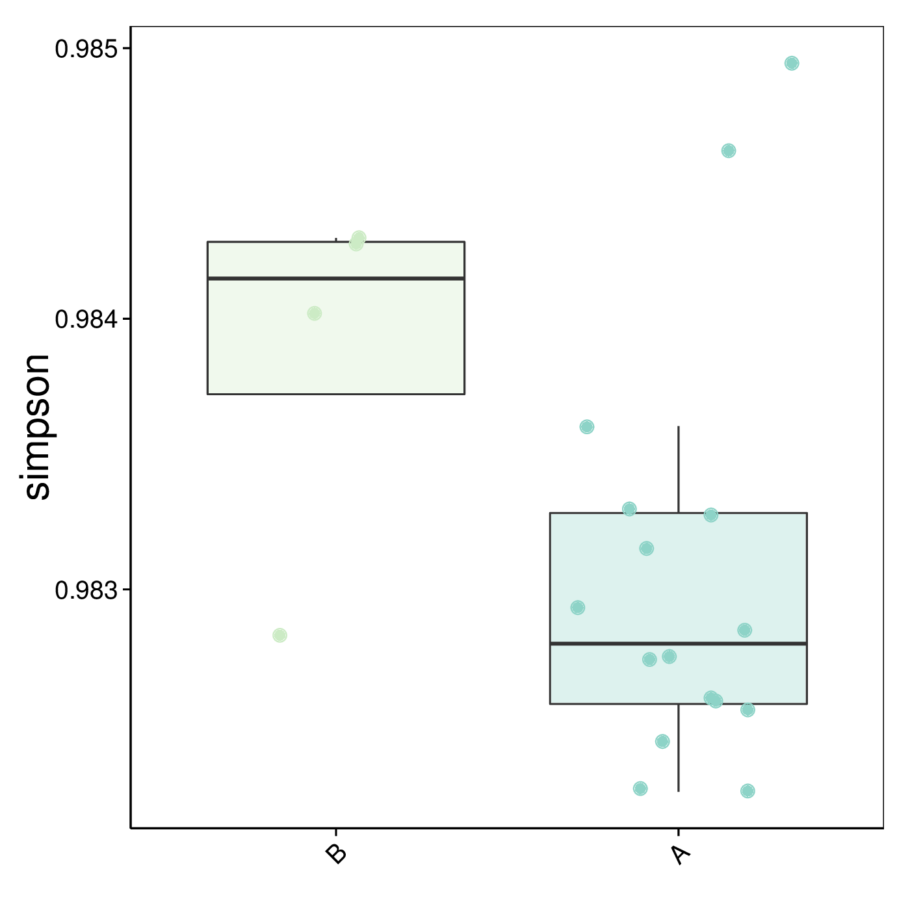
Figure 4.14 Boxplot of Alpha Diversity Indices
Notes: The box plot is a graphical representation of data distribution that displays the median, quartiles, and outliers, providing a visual understanding of the data spread and extreme values. The X-axis indicates the group of samples, while the Y-axis represents the alpha diversity.
Results directory: Boxplot of Alpha Diversity Indices: result/03.Alphadiversity/*/Alpha_box_group1/*/*png
4.3.4 eggNOG Alpha Diversity Analysis
4.3.4.1 Alpha diversity Indices
Starting from the annotated Reads Number table of taxonomic level, calculate the richness and diversity of each sample (or group).
Table 4.5 Statistical Results of Alpha Diversity Analysis
| Sample | ACE | chao1 | shannon | simpson | observed_species | goods_coverage |
|---|---|---|---|---|---|---|
| A1 | 18725.5474570461 | 18703.1372756072 | 8.20302843487908 | 0.999031711854715 | 18603 | 1 |
| A2 | 14914.0573810836 | 14898.77680798 | 8.04009959046835 | 0.999341788737507 | 14759 | 1 |
| A3 | 15214.7361636287 | 15237.9510664994 | 8.08826599853764 | 0.999298395351958 | 15028 | 1 |
| A4 | 19875.9066517787 | 19904.6266094421 | 8.22892040254684 | 0.999235298016684 | 19662 | 1 |
| A5 | 12209.7451441973 | 12200.2586490939 | 8.02895266514526 | 0.999333057062228 | 12081 | 1 |
| A6 | 20851.9073681335 | 20831.347826087 | 8.20468069065558 | 0.999182178385681 | 20681 | 1 |
| A7 | 16288.7422552139 | 16281.1951530612 | 8.13932458481603 | 0.998788335015077 | 16143 | 1 |
| A8 | 24638.226387385 | 24649.0517241379 | 8.3892722625121 | 0.999284648343984 | 24460 | 1 |
| A9 | 15196.3157264253 | 15189.1800262812 | 8.36797019109935 | 0.999473536452021 | 15040 | 1 |
| A10 | 22495.6477973711 | 22493.8622754491 | 8.30201848601688 | 0.999443547698278 | 22301 | 1 |
| A11 | 18066.4477445333 | 18066.8915662651 | 7.86112994175078 | 0.997557364822941 | 17971 | 1 |
| A12 | 13165.0440332984 | 13156.7210300429 | 7.61402163950297 | 0.997014342535306 | 13119 | 1 |
| A13 | 12907.6665602688 | 12897.1981132075 | 7.55934992335768 | 0.997409718520557 | 12838 | 1 |
| A14 | 13227.5558619961 | 13214.75 | 7.2683783760689 | 0.997044540199203 | 13076 | 1 |
| A15 | 10169.9970539175 | 10160.4060913706 | 7.49668303153527 | 0.997503989381306 | 10060 | 1 |
| A16 | 24309.4505599341 | 24309.8762019231 | 8.25313892424356 | 0.999073813119498 | 24213 | 1 |
| B1 | 17941.9194536211 | 17932.4514106583 | 7.68717847240703 | 0.996630220027019 | 17800 | 1 |
| B4 | 12525.4685618327 | 12517.2898305085 | 7.50514897055936 | 0.99818030741313 | 12434 | 1 |
| B3 | 18474.9690728855 | 18501.0916030534 | 7.74857660931194 | 0.998320657992912 | 18243 | 1 |
| B2 | 13812.682764422 | 13814.9340101523 | 7.56600556967839 | 0.998146000550406 | 13711 | 1 |
- ACE: Estimating number of function in the community.
- chao1: The total number of function contained in the community samples was estimated.
- shannon: The total number of taxa in the samples and their percentage. The higher the community diversity and the more evenly distributed the function, the greater the shannon index.
- simpson: Characterizes the diversity and evenness of function distribution within a community.
- observed: Number of directly observed function.
- goods_coverage: Sequencing depth index coverage, the higher the sequencing coverage, the larger the index.
Results directory: Alpha Diversity indices statistics: result/03.Alphadiversity/*/Alpha_index_table/*_Alphaindex.*.xls
4.3.4.2 Alpha Diversity Indices Boxplot
Based on the Alpha Diversity table of orthologous groups, the box of the alpha diversity was displayed.The figure illustrates an example with only one index.
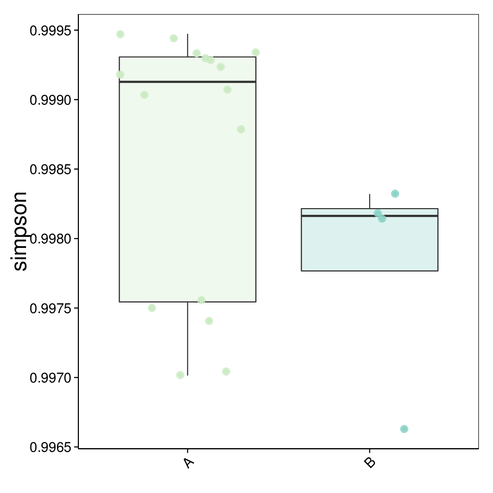
Figure 4.15 Boxplot of Alpha Diversity Indices
Notes: The box plot is a graphical representation of data distribution that displays the median, quartiles, and outliers, providing a visual understanding of the data spread and extreme values. The X-axis indicates the group of samples, while the Y-axis represents the alpha diversity.
Results directory: Boxplot of Alpha Diversity Indices: result/03.Alphadiversity/*/Alpha_box_group1/*/*png
4.3.5 Pfam Alpha Diversity Analysis
4.3.5.1 Alpha diversity Indices
Starting from the annotated Reads Number table of taxonomic level, calculate the richness and diversity of each sample (or group).
Table 4.6 Statistical Results of Alpha Diversity Analysis
| Sample | ACE | chao1 | shannon | simpson | observed_species | goods_coverage |
|---|---|---|---|---|---|---|
| A1 | 6283.14737718087 | 6287.47887323944 | 6.98331653124452 | 0.996086189888452 | 6265 | 1 |
| A2 | 6402.22757239264 | 6410.57142857143 | 7.31686271532296 | 0.998237743305547 | 6372 | 1 |
| A3 | 6136.02454276603 | 6147.22289156627 | 7.20942160771589 | 0.998107111452798 | 6079 | 1 |
| A4 | 8055.59314317817 | 8074.11428571429 | 6.84616179578225 | 0.994570549296399 | 7944 | 1 |
| A5 | 5123.1748949898 | 5126.91919191919 | 7.21015394598023 | 0.998244642027543 | 5090 | 1 |
| A6 | 6999.04634396011 | 7046.8671875 | 7.02906456398595 | 0.996359198157951 | 6911 | 1 |
| A7 | 6214.76586941616 | 6237.16 | 6.85891539106009 | 0.995841415240262 | 6175 | 1 |
| A8 | 6756.35455200477 | 6776.5 | 7.17081806717366 | 0.997712472718271 | 6675 | 1 |
| A9 | 6337.914784807 | 6390.5 | 7.20749204158461 | 0.998114944673003 | 6140 | 1 |
| A10 | 7752.4090012454 | 7759.625 | 7.1748377795654 | 0.997037267472829 | 7592 | 1 |
| A11 | 6820.90164831546 | 6842.35675675676 | 6.52026201457632 | 0.991914430775125 | 6738 | 1 |
| A12 | 5405.24086379723 | 5408.11392405063 | 6.34922490636399 | 0.990994774236772 | 5390 | 1 |
| A13 | 5905.86288237606 | 5908.11538461538 | 6.49136559735073 | 0.993353466103792 | 5880 | 1 |
| A14 | 5445.77285586659 | 5461 | 7.03823805488547 | 0.997643561113882 | 5418 | 1 |
| A15 | 7430.7769977792 | 7436.01136363636 | 6.86229599072339 | 0.993824040801429 | 7401 | 1 |
| A16 | 7195.19282292441 | 7232.31914893617 | 6.92115969841786 | 0.995388908169315 | 7094 | 1 |
| B1 | 6866.96159495319 | 6913.09395973154 | 6.4794958085174 | 0.991099532634931 | 6770 | 1 |
| B4 | 6010.40577239216 | 6034.75862068965 | 6.85119276937721 | 0.996016047728123 | 5972 | 1 |
| B3 | 7808.51132252711 | 7852.47596153846 | 6.80372344248675 | 0.99540768930711 | 7698 | 1 |
| B2 | 6341.58834824758 | 6350.28448275862 | 6.70932406008269 | 0.994968478020663 | 6305 | 1 |
- ACE: Estimating number of function in the community.
- chao1: The total number of function contained in the community samples was estimated.
- shannon: The total number of function in the samples and their percentage. The higher the community diversity and the more evenly distributed the function, the greater the shannon index.
- simpson: Characterizes the diversity and evenness of function distribution within a community.
- observed: Number of directly observed function.
- goods_coverage: Sequencing depth index coverage, the higher the sequencing coverage, the larger the index.
Results directory: Alpha Diversity indices statistics: result/03.Alphadiversity/*/Alpha_index_table/*_Alphaindex.*.xls
4.3.5.2 Alpha Diversity Indices Boxplot
Based on the Alpha Diversity table of protein families, the box of the alpha diversity was displayed.The figure illustrates an example with only one index.
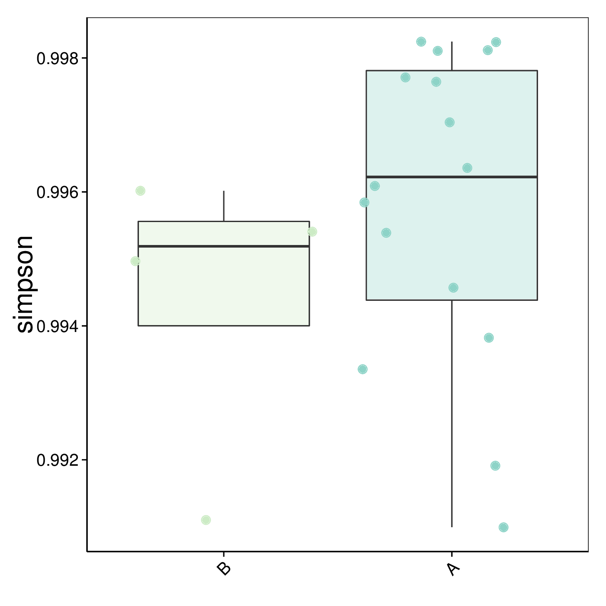
Figure 4.16 Boxplot of Alpha Diversity Indices
Notes: The box plot is a graphical representation of data distribution that displays the median, quartiles, and outliers, providing a visual understanding of the data spread and extreme values. The X-axis indicates the group of samples, while the Y-axis represents the alpha diversity.
Results directory: Boxplot of Alpha Diversity Indices: result/03.Alphadiversity/*/Alpha_box_group1/*/*png
4.4 Beta Diversity Analysis
Beta diversity is a measure of biodiversity used to describe the extent of variation between biological communities in different groups. It quantifies the differences in species composition between different groups.Beta diversity analysis includes clustering tree, PCoA, PCA and NMDS.
4.4.1 Sample Clustering with Taxonomic and Function Abundance
Sample clustering analysis based on the Bray-Curtis distance can evaluate the similarity of samples. The distance was calculated according to relative taxonomic abundance. The final results were exhibited by combining the clustering result and the relative abundance of different samples at the taxonomic level or function level.
4.4.1.1 Kraken cluster analysis
Based on the abundance table of taxonomic level, The result of clustering was shown below.
Figure 4.17 The Clustering Analysis Plot of Relative Abundance
Notes: In the figure, the left side is the structure of the Bray-Curtis distance clustering tree; the right side is the relative abundance distribution of each sample at the taxonomic level.
Result directory: Clustering tree based on Bray-Curtis distance: result/04.Betadiversity/*/ClusterTree_group1/*/Bar.tree.*10.{svg,png}
4.4.1.2 KEGG cluster analysis
Based on the abundance table of KEGG orthology (KEGG enzyme/KEGG pathway/KEGG module), The result of clustering was shown below.
Figure 4.18 The Clustering Analysis Plot of Relative Abundance
Notes: In the figure, the left side is the structure of the Bray-Curtis distance clustering tree; the right side is the relative abundance distribution of each sample at the KEGG orthology (KEGG enzyme/KEGG pathway/KEGG module).
Result directory: Clustering tree based on Bray-Curtis distance: result/04.Betadiversity/*/ClusterTree_group1/*/Bar.tree.*10.{svg,png}
4.4.1.3 GO cluster analysis
Based on the abundance table of gene ontology, The result of clustering was shown below.
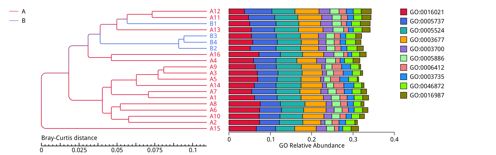
Figure 4.19 The Clustering Analysis Plot of Relative Abundance
Notes: In the figure, the left side is the structure of the Bray-Curtis distance clustering tree; the right side is the relative abundance distribution of each sample at the gene ontology.
Result directory: Clustering tree based on Bray-Curtis distance: result/04.Betadiversity/*/ClusterTree_group1/*/Bar.tree.*10.{svg,png}
4.4.1.4 eggNOG cluster analysis
Based on the abundance table of orthologous group, The result of clustering was shown below.
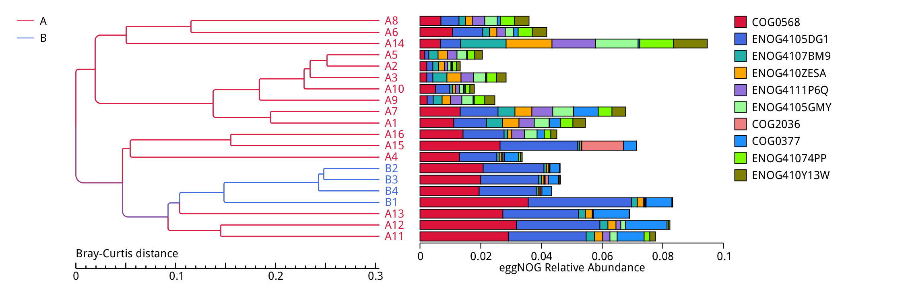
Figure 4.20 The Clustering Analysis Plot of Relative Abundance
Notes: In the figure, the left side is the structure of the Bray-Curtis distance clustering tree; the right side is the relative abundance distribution of each sample at the orthologous group.
Result directory: Clustering tree based on Bray-Curtis distance: result/04.Betadiversity/*/ClusterTree_group1/*/Bar.tree.*10.{svg,png}
4.4.1.5 Pfam cluster analysis
Based on the abundance table of protein families, The result of clustering was shown below.
Figure 4.21 The Clustering Analysis Plot of Relative Abundance
Notes: In the figure, the left side is the structure of the Bray-Curtis distance clustering tree; the right side is the relative abundance distribution of each sample at the protein families.
Result directory: Clustering tree based on Bray-Curtis distance: result/04.Betadiversity/*/ClusterTree_group1/*/Bar.tree.*10.{svg,png}
4.4.2 PCA Analysis
Principal Component Analysis (PCA) Analysis is a method used for dimension reduction analysis. PCA uses an orthogonal transformation to convert a set of observations of possibly correlated variables into a set of values of linearly uncorrelated variables called principal components. The PCA transformation ensures that the horizontal axis PC1 accounts for the most variation while the vertical axis PC2 accounts for the second most (Avershina et al., 2013). For the samples' community composition, the closer the sample points within the PCA figure indicates more similarity among the samples.
4.4.2.1 Kraken PCA Analysis
Based on the abundance table of taxonomic level, the result of PCA was shown below.
Figure 4.22 PCA Analysis
Notes: PCA: The X-axis is the first principal component; the Y-axis is the second principal component. The percentage is the contribution of the principal components to the sample's variation. Each point in the graph stands for a sample. Samples belonging to the same group are in the same color.
Result directory: PCA figure : result/04.Betadiversity/*/PCA_*/*/PCA_*.{png,pdf}
4.4.2.2 KEGG PCA Analysis
Based on the abundance table of KEGG orthology (KEGG enzyme/KEGG pathway/KEGG module), the result of PCA was shown below.
Figure 4.23 PCA Analysis
Notes: PCA: The X-axis is the first principal component; the Y-axis is the second principal component. The percentage is the contribution of the principal components to the sample's variation. Each point in the graph stands for a sample. Samples belonging to the same group are in the same color.
Result directory: PCA figure : result/04.Betadiversity/*/PCA_*/*/PCA_*.{png,pdf}
4.4.2.3 GO PCA Analysis
Based on the abundance table of gene ontology, the result of PCA was shown below.
Figure 4.24 PCA Analysis
Notes: PCA: The X-axis is the first principal component; the Y-axis is the second principal component. The percentage is the contribution of the principal components to the sample's variation. Each point in the graph stands for a sample. Samples belonging to the same group are in the same color.
Result directory: PCA figure : result/04.Betadiversity/*/PCA_*/*/PCA_*.{png,pdf}
4.4.2.4 eggNOG PCA Analysis
Based on the abundance table of orthologous groups, the result of PCA was shown below.
Figure 4.25 PCA Analysis
Notes: PCA: The X-axis is the first principal component; the Y-axis is the second principal component. The percentage is the contribution of the principal components to the sample's variation. Each point in the graph stands for a sample. Samples belonging to the same group are in the same color.
Result directory: PCA figure : result/04.Betadiversity/*/PCA_*/*/PCA_*.{png,pdf}
4.4.2.5 Pfam PCA Analysis
Based on the abundance table of protein families, the result of PCA was shown below.
Figure 4.26 PCA Analysis
Notes: PCA: The X-axis is the first principal component; the Y-axis is the second principal component. The percentage is the contribution of the principal components to the sample's variation. Each point in the graph stands for a sample. Samples belonging to the same group are in the same color.
Result directory: PCA figure : result/04.Betadiversity/*/PCA_*/*/PCA_*.{png,pdf}
4.4.3 PCoA Analysis
Principal Coordinate Analysis (PCoA) is an ordination technique that picks up the primary elements and structure from reduced multi-dimensional data series of eigenvalues and eigenvectors. This technique has the advantage over PCA in that each ecological distance can be investigated. Aggregated samples represent higher species composition similarity than those that are further apart. PCoA result based on Bray-Curtis distance are shown below.
4.4.3.1 Kraken PCoA Analysis
Based on the abundance table of taxonomic level, the result of PCoA was shown below.

Figure 4.27 PCoA Analysis
Note: PCoA: The X-axis is the first principal coordinate; the Y-axis is the second principal coordinate. The percentage stands for the contribution of the principal coordinate to the variation in samples. Each point in the graph stands for a sample. Samples belonging to the same group are in the same color.
Results directory: PCoA figure: result/04.Betadiversity/*/PCoA_group1/*/PCoA_*.{png,pdf}
4.4.3.2 KEGG PCoA Analysis
Based on the abundance table of KEGG orthology (KEGG enzyme/KEGG pathway/KEGG module), the result of PCoA was shown below.
Figure 4.28 PCoA Analysis
Note: PCoA: The X-axis is the first principal coordinate; the Y-axis is the second principal coordinate. The percentage stands for the contribution of the principal coordinate to the variation in samples. Each point in the graph stands for a sample. Samples belonging to the same group are in the same color.
Results directory: PCoA figure: result/04.Betadiversity/*/PCoA_group1/*/PCoA_*.{png,pdf}
4.4.3.3 GO PCoA Analysis
Based on the abundance table of gene ontology, the result of PCoA was shown below.
Figure 4.29 PCoA Analysis
Note: PCoA: The X-axis is the first principal coordinate; the Y-axis is the second principal coordinate. The percentage stands for the contribution of the principal coordinate to the variation in samples. Each point in the graph stands for a sample. Samples belonging to the same group are in the same color.
Results directory: PCoA figure: result/04.Betadiversity/*/PCoA_group1/*/PCoA_*.{png,pdf}
4.4.3.4 eggNOG PCoA Analysis
Based on the abundance table of orthologous groups, the result of PCoA was shown below.
Figure 4.30 PCoA Analysis
Note: PCoA: The X-axis is the first principal coordinate; the Y-axis is the second principal coordinate. The percentage stands for the contribution of the principal coordinate to the variation in samples. Each point in the graph stands for a sample. Samples belonging to the same group are in the same color.
Results directory: PCoA figure: result/04.Betadiversity/*/PCoA_group1/*/PCoA_*.{png,pdf}
4.4.3.5 Pfam PCoA Analysis
Based on the abundance table of protein families, the result of PCoA was shown below.
Figure 4.31 PCoA Analysis
Note: PCoA: The X-axis is the first principal coordinate; the Y-axis is the second principal coordinate. The percentage stands for the contribution of the principal coordinate to the variation in samples. Each point in the graph stands for a sample. Samples belonging to the same group are in the same color.
Results directory: PCoA figure: result/04.Betadiversity/*/PCoA_group1/*/PCoA_*.{png,pdf}
4.4.4 NMDS Analysis
Non-metric Multidimensional Scaling (NMDS) is a ranking method applicable to ecological research. It is a non-linear model designed for a better representation of non-linear biological data structure. NMDS can retain the original relationship among samples while reducing the research targets from a multidimensional space to a low-dimensional space for analysis, positioning, and categorization. This allows NMDS analysis to address the similarity or dissimilarity between targets as a monotonic function of the distance between the points.
4.4.4.1 Kraken NMDS Analysis
Based on the abundance table of taxonomic level, the result of NMDS was shown below.
Figure 4.32 NMDS Analysis
Notes: NMDS reflects the pairwise dissimilarity between objects in a low-dimensional space. Samples belonging to the same group are in the same color. When the value of Stress factor is less than 0.2, it is considered that NMDS is reliable to some extent.
Result directory: NMDS figure : result/04.Betadiversity/*/NMDS_*/*/NMDS_*.{png,pdf}
4.4.4.2 KEGG NMDS Analysis
Based on the abundance table of KEGG orthology (KEGG enzyme/KEGG pathway/KEGG module), the result of NMDS was shown below.

Figure 4.33 NMDS Analysis
Notes: NMDS reflects the pairwise dissimilarity between objects in a low-dimensional space. Samples belonging to the same group are in the same color. When the value of Stress factor is less than 0.2, it is considered that NMDS is reliable to some extent.
Result directory: NMDS figure : result/04.Betadiversity/*/NMDS_*/*/NMDS_*.{png,pdf}
4.4.4.3 GO NMDS Analysis
Based on the abundance table of gene ontology, the result of NMDS was shown below.
Figure 4.34 NMDS Analysis
Notes: NMDS reflects the pairwise dissimilarity between objects in a low-dimensional space. Samples belonging to the same group are in the same color. When the value of Stress factor is less than 0.2, it is considered that NMDS is reliable to some extent.
Result directory: NMDS figure : result/04.Betadiversity/*/NMDS_*/*/NMDS_*.{png,pdf}
4.4.4.4 eggNOG NMDS Analysis
Based on the abundance table of orthologous groups, the result of NMDS was shown below.
Figure 4.35 NMDS Analysis
Notes: NMDS reflects the pairwise dissimilarity between objects in a low-dimensional space. Samples belonging to the same group are in the same color. When the value of Stress factor is less than 0.2, it is considered that NMDS is reliable to some extent.
Result directory: NMDS figure : result/04.Betadiversity/*/NMDS_*/*/NMDS_*.{png,pdf}
4.4.4.5 Pfam NMDS Analysis
Based on the abundance table of protein families, the result of NMDS was shown below.
Figure 4.36 NMDS Analysis
Notes: NMDS reflects the pairwise dissimilarity between objects in a low-dimensional space. Samples belonging to the same group are in the same color. When the value of Stress factor is less than 0.2, it is considered that NMDS is reliable to some extent.
Result directory: NMDS figure : result/04.Betadiversity/*/NMDS_*/*/NMDS_*.{png,pdf}
4.5 Analysis of Statistical Tests for Taxonomy and Function Differences Between Groups
4.5.1 Anosim
Anosim (Chapman M G et al.,1999) (https://www.rdocumentation.org/packages/vegan/versions/2.3-5/topics/anosim) is a nonparametric test helps evaluate the reasonability of the division of groups by evaluating whether variation among groups is significantly greater than variation within group.
4.5.1.1 Kraken Anosim
Based on the abundance table of taxonomic level, the Anosim analysis was displayed.The table illustrates an example with only species level.
Table 4.7 Anosim analysis
| Group | R-value | P-value |
|---|---|---|
| A-B | 0.36409 | 0.019 |
Notes: Plotted by the rank value on the Y-axis. R-value is a number between -1 and 1. A positive R value means that inter-group variation is considered significant, while a negative R-value suggests that inner-group variation is greater than inter-group. The confidence degree is represented by P-value, whose value less than 0.05 suggests statistical significance.
Results directory: Anosim result：result/05.StatisticalTest/*/Anosim_group1
4.5.1.2 KEGG Anosim
Based on the abundance table of KEGG orthology (KEGG enzyme/KEGG pathway/KEGG module), the Anosim analysis was displayed.The table illustrates an example with only KEGG orthology.
Table 4.8 Anosim analysis
| Group | R-value | P-value |
|---|---|---|
| A-B | -0.00446 | 0.497 |
Notes: Plotted by the rank value on the Y-axis. R-value is a number between -1 and 1. A positive R value means that inter-group variation is considered significant, while a negative R-value suggests that inner-group variation is greater than inter-group. The confidence degree is represented by P-value, whose value less than 0.05 suggests statistical significance.
Results directory: Anosim result：result/05.StatisticalTest/*/Anosim_group1
4.5.1.3 GO Anosim
Based on the abundance table of gene ontolog, the Anosim analysis was displayed.
Table 4.9 Anosim analysis
| Group | R-value | P-value |
|---|---|---|
| A-B | 0.21825 | 0.078 |
Notes: Plotted by the rank value on the Y-axis. R-value is a number between -1 and 1. A positive R value means that inter-group variation is considered significant, while a negative R-value suggests that inner-group variation is greater than inter-group. The confidence degree is represented by P-value, whose value less than 0.05 suggests statistical significance.
Results directory: Anosim result：result/05.StatisticalTest/*/Anosim_group1
4.5.1.4 eggNOG Anosim
Based on the abundance table of orthologous groups, the Anosim analysis was displayed.
Table 4.10 Anosim analysis
| Group | R-value | P-value |
|---|---|---|
| A-B | 0.16691 | 0.052 |
Notes: Plotted by the rank value on the Y-axis. R-value is a number between -1 and 1. A positive R value means that inter-group variation is considered significant, while a negative R-value suggests that inner-group variation is greater than inter-group. The confidence degree is represented by P-value, whose value less than 0.05 suggests statistical significance.
Results directory: Anosim result：result/05.StatisticalTest/*/Anosim_group1
4.5.1.5 Pfam Anosim
Based on the abundance table of protein families, the Anosim analysis was displayed.
Table 4.11 Anosim analysis
| Group | R-value | P-value |
|---|---|---|
| A-B | 0.17113 | 0.072 |
Notes: Plotted by the rank value on the Y-axis. R-value is a number between -1 and 1. A positive R value means that inter-group variation is considered significant, while a negative R-value suggests that inner-group variation is greater than inter-group. The confidence degree is represented by P-value, whose value less than 0.05 suggests statistical significance.
Results directory: Anosim result：result/05.StatisticalTest/*/Anosim_group1
4.5.2 MetaGenomeSeq
MetaGenomeSeq (Paulson JN et al., 2013) is developed in the context of metagenomic data comprising multiple sample, and relies on a non-parametric t-test for detecting differentially abundant features in metagenomic studies. The p-value is further corrected as a q-value to discover taxa with significant variation.
4.5.2.1 Kraken MetaGenomeSeq
Based on the abundance table of taxonomic level, the result of MetaGenomeSeq was shown below.
Figure 4.37 Boxplot of Significant Changes in Relative Abundance between Groups
Notes: The X-axis indicates the group of samples; the Y-axis indicates the abundance of corresponding species. "*" means the variation between the two groups is significant (q <0.05); "**" means the variation between the two groups is extremely significant (q <0.01).
Result Directory: MetaGenomeSeq analysis result: result/05.StatisticalTest/*/MetaGenomeSeq_group1
4.5.2.2 KEGG MetaGenomeSeq
Based on the abundance table of KEGG orthology (KEGG enzyme/KEGG pathway/KEGG module), the result of MetaGenomeSeq was shown below.
Figure 4.38 Boxplot of Significant Changes in Relative Abundance between Groups
Notes: The X-axis indicates the group of samples; the Y-axis indicates the abundance of corresponding species. "*" means the variation between the two groups is significant (q <0.05); "**" means the variation between the two groups is extremely significant (q <0.01).
Result Directory: MetaGenomeSeq analysis result: result/05.StatisticalTest/*/MetaGenomeSeq_group1
4.5.2.3 GO MetaGenomeSeq
Based on the abundance table of gene ontology, the result of MetaGenomeSeq was shown below.
Figure 4.39 Boxplot of Significant Changes in Relative Abundance between Groups
Notes: The X-axis indicates the group of samples; the Y-axis indicates the abundance of corresponding species. "*" means the variation between the two groups is significant (q <0.05); "**" means the variation between the two groups is extremely significant (q <0.01).
Result Directory: MetaGenomeSeq analysis result: result/05.StatisticalTest/*/MetaGenomeSeq_group1
4.5.2.4 eggNOG MetaGenomeSeq
Based on the abundance table of orthologous groups, the result of MetaGenomeSeq was shown below.
Figure 4.40 Boxplot of Significant Changes in Relative Abundance between Groups
Notes: The X-axis indicates the group of samples; the Y-axis indicates the abundance of corresponding species. "*" means the variation between the two groups is significant (q <0.05); "**" means the variation between the two groups is extremely significant (q <0.01).
Result Directory: MetaGenomeSeq analysis result: result/05.StatisticalTest/*/MetaGenomeSeq_group1
4.5.2.5 Pfam MetaGenomeSeq
Based on the abundance table of protein families, the result of MetaGenomeSeq was shown below.
Figure 4.41 Boxplot of Significant Changes in Relative Abundance between Groups
Notes: The X-axis indicates the group of samples; the Y-axis indicates the abundance of corresponding species. "*" means the variation between the two groups is significant (q <0.05); "**" means the variation between the two groups is extremely significant (q <0.01).
Result Directory: MetaGenomeSeq analysis result: result/05.StatisticalTest/*/MetaGenomeSeq_group1
4.5.3 LEfSe
To screen for significant Biomarkers with inter-group differences, different species or functions between groups are first detected using the rank-sum test method, and dimensional reduction is achieved through Linear Discriminant Analysis (LDA) to assess the magnitude of the impact of different species or functions (Segata N et al., 2011), resulting in LDA scores. The LEfSe analysis results for inter-group differences include three parts: the distribution bar plot of LDA values, the cladogram (showing the unique phylogenetic distribution of species), and abundance comparison plots of Biomarkers with statistically significant differences between groups.
4.5.3.1 Kraken LEfSe
Based on the abundance table of taxonomic level, the result of LEfSe was shown below.
Figure 4.42 Histogram of LDA Scores
Notes: The histogram of the LDA scores presents biomarker whose LDA scores are greater than the set threshold (4 set by default). The LDA score represents the effect size (the extent to which a biomarker can explain the differentiating phenotypes among groups).
Figure 4.43 Tree of LDA Scores
Notes : In the Cladogram, circles radiating from the inner side to the outer side represent taxonomic rank from phylum to genus (species). Each circle stands for a distinct taxon at a corresponding taxonomic rank. The diameter of each circle represents proportionally the relative abundance of each taxon. Yellow stands for taxons with non-significant differences. Taxon (biomarkers) with significant differences are colored according to the corresponding group's color. Red nodes mean this microbiota contributes a lot in the group covered by red color, and so do the green nodes. Letters above the circles and corresponding species are annotated on the right side.
Result Directory: LEfSe analysis result: result/05.StatisticalTest/*/Lefse_group1
4.5.3.2 KEGG LEfSe
Based on the abundance table of KEGG orthology (KEGG enzyme/KEGG pathway/KEGG module), the result of LEfSe was shown below.
Figure 4.44 Histogram of LDA Scores
Notes: The histogram of the LDA scores presents biomarker whose LDA scores are greater than the set threshold (2 set by default). The LDA score represents the effect size (the extent to which a biomarker can explain the differentiating phenotypes among groups).
Result Directory: LEfSe analysis result: result/05.StatisticalTest/*/Lefse_group1
4.5.3.3 GO LEfSe
Based on the abundance table of gene ontology, the result of LEfSe was shown below.
Figure 4.45 Histogram of LDA Scores
Notes: The histogram of the LDA scores presents biomarker whose LDA scores are greater than the set threshold (2 set by default). The LDA score represents the effect size (the extent to which a biomarker can explain the differentiating phenotypes among groups).
Result Directory: LEfSe analysis result: result/05.StatisticalTest/*/Lefse_group1
4.5.3.4 eggNOG LEfSe
Based on the abundance table of orthologous groups, the result of LEfSe was shown below.
Figure 4.46 Histogram of LDA Scores
Notes: The histogram of the LDA scores presents biomarker whose LDA scores are greater than the set threshold (2 set by default). The LDA score represents the effect size (the extent to which a biomarker can explain the differentiating phenotypes among groups).
Result Directory: LEfSe analysis result: result/05.StatisticalTest/*/Lefse_group1
4.5.3.5 Pfam LEfSe
Based on the abundance table of protein families, the result of LEfSe was shown below.
Figure 4.47 Histogram of LDA Scores
Notes: The histogram of the LDA scores presents biomarker whose LDA scores are greater than the set threshold (2 set by default). The LDA score represents the effect size (the extent to which a biomarker can explain the differentiating phenotypes among groups).
Result Directory: LEfSe analysis result: result/05.StatisticalTest/*/Lefse_group1
5.Appendix
5.1 List of Analysis Software
| Analysis | Software | Version | Parameter | Remarks |
|---|---|---|---|---|
| Data quality | fastp | 0.23.1 | -g -q 5 -u 50 -n 10 -l 150 --min_trim_length 10 --overlap_diff_limit 1 | - |
| Host trimming | bowtie2 | 2.5.4 | --end-to-end --sensitive --no-hd --no-sq -I 200 -X 400 --threads 8 | - |
| Taxonomy annotation | Kraken2 && Braken | 2.1.3 && v2.9 | --threads 5 --quick --classified-out classified#.fq --gzip-compressed | The database by default uses an integrated microbial database comprising four sections—bacteria, archaea, fungi, and viruses—extracted from the PlusPFP database on the official website. |
| KEGG PATHWAY annotation | diamond | 2.1.9 | --minpath off --gap-fill on --threads 5 --protein-database | KEGG(Version: 2023) |
| KEGG MODULE annotation | diamond | 2.1.9 | --minpath off --gap-fill on --threads 5 --protein-database | KEGG(Version: 2023) |
| KEGG Orthology annotation | diamond | 2.1.9 | --minpath off --gap-fill on --threads 5 --protein-database | KEGG(Version: 2023) |
| KEGG ENZYME annotation | diamond | 2.1.9 | --minpath off --gap-fill on --threads 5 --protein-database | KEGG(Version: 2023) |
| GO annotation | diamond | 2.1.9 | --minpath off --gap-fill on --threads 5 --protein-database | GO(Version: 2023.03) |
| eggNOG annotation | diamond | 2.1.9 | --minpath off --gap-fill on --threads 5 --protein-database | eggNOG(Version: 2023.03) |
| Pfam annotation | diamond | 2.1.9 | --minpath off --gap-fill on --threads 5 --protein-database | Pfam(Version: 2023.03) |
| Barplot | perl | 5.18.2 | use SVG | - |
| Cluster heatmap | R | 3.1.0 | R package = pheatmap | - |
| Alpha diversity | R | 2.15.3 | R package = vegan | - |
| Cluster tree | perl | 5.18.2 | use SVG | - |
| PCA | R | 3.0.3 | R package = FactoMineR， ggplot2，grid | - |
| NMDS | R | 2.15.3 | R package = vegan,permute,lattice | - |
| PCoA | R | 2.15.3 | R package = extrafont,ggplot2,grid | - |
| Anosim | R | 2.15.3 | R package = vegan,permute,lattice | - |
| MetaGenomeSeq | R | 2.15.3 | q value (Benjamini and Hochberg FDR) < 0.05 | - |
| MetaGenomeSeq heatmap | R | 3.1.0 | R package = pheatmap | - |
| MetaGenomeSeq combined | R | 2.15.3 | R package = ggplot2 | - |
| LEfSe | LEfSe | 1.0 | LDA Score>4，function LDA Score>2 | - |
5.2 Methods
Click to open the method(pdf), and the corresponding file can be viewed directly.methods
5.3 Result File Decompression Tool and Format Description
| Compressed.format | Customer.type | Uncompressed.method |
|---|---|---|
| compressed files in the fomat of *.tar: | Unix/Linux/Mac user | use tar -xvf *.tar command |
| compressed files in the fomat of *.tar: | Windows user | use uncompressed software such as WinRAR, 7-Zip et al |
| compressed files in the format of *.gz: | Unix/Linux/Mac user | use gzip -d *.gz command |
| compressed files in the format of *.gz: | Windows user | use uncompressed software such as WinRAR, 7-Zip et al |
| compressed files in the format of *.zip: | Unix/Linux/Mac user | use unzip *.zip command |
| compressed files in the format of *.zip: | Windows user | use uncompressed software such as WinRAR, 7-Zip et al |
6 References
Blanco-Míguez, A., Beghini, F., Cumbo, F., et al. (2023). Extending and improving metagenomic taxonomic profiling with uncharacterized species using MetaPhlAn 4. Nature Biotechnology, 41(11), 1633–1644. https://doi.org/10.1038/s41587-023-01688-w. Chapman, M., & Underwood, A. (1999). Ecological patterns in multivariate assemblages: information and interpretation of negative values in ANOSIM tests. Marine Ecology Progress Series, 180, 257–265. https://doi.org/10.3354/meps180257. Handelsman, J., Rondon, M. R., Brady, S. F., et al. (1998). Molecular biological access to the chemistry of unknown soil microbes: a new frontier for natural products. Chemistry & Biology, 5(10), R245-R249. https://doi.org/10.1016/s1074-5521(98)90108-9. Harris, M. A., Clark, J., Ireland, A., et al. (2004). The Gene Ontology (GO) database and informatics resource. Nucleic Acids Research, 32(Database issue), D258-D261. https://doi.org/10.1093/nar/gkh036. Huerta-Cepas, J., Szklarczyk, D., Heller, D., et al. (2019). eggNOG 5.0: a hierarchical, functionally and phylogenetically annotated orthology resource based on 5090 organisms and 2502 viruses. Nucleic Acids Research, 47(D1), D309-D314. https://doi.org/10.1093/nar/gky1085. Kanehisa, M., & Goto, S. (2000). KEGG: Kyoto Encyclopedia of Genes and Genomes. Nucleic Acids Research, 28(1), 27–30. https://doi.org/10.1093/nar/28.1.27. Karp, P. D., Riley, M., Paley, S. M., & Pellegrini-Toole, A. (2002). The MetaCyc Database. Nucleic Acids Research, 30(1), 59–61. https://doi.org/10.1093/nar/30.1.59. Mistry, J., Chuguransky, S., Williams, L., et al. (2021). Pfam: The protein families database in 2021. Nucleic Acids Research, 49(D1), D412-D419. https://doi.org/10.1093/nar/gkaa913. Paulson, J. N., Stine, O. C., Bravo, H. C., & Pop, M. (2013). Differential abundance analysis for microbial marker-gene surveys. Nature Methods, 10(12), 1200–1202. https://doi.org/10.1038/nmeth.2658. Segata, N., Izard, J., Waldron, L., et al. (2011). Metagenomic biomarker discovery and explanation. Genome Biology, 12(6), R60. https://doi.org/10.1186/gb-2011-12-6-r60. Truong, D. T., Tett, A., Pasolli, E., Huttenhower, C., & Segata, N. (2017). Microbial strain-level population structure and genetic diversity from metagenomes. Genome Research, 27(4), 626–638. https://doi.org/10.1101/gr.216242.116. van der Heijden, M. G., Bardgett, R. D., & van Straalen, N. M. (2008). The unseen majority: soil microbes as drivers of plant diversity and productivity in terrestrial ecosystems. Ecology Letters, 11(3), 296–310. https://doi.org/10.1111/j.1461-0248.2007.01139.x. Walter, J., & Ley, R. (2011). The human gut microbiome: ecology and recent evolutionary changes. Annual Review of Microbiology, 65, 411–429. https://doi.org/10.1146/annurev-micro-090110-102830. Wood DE, Lu J, Langmead B. Improved metagenomic analysis with Kraken 2. Genome Biol. 2019;20(1):257. Published 2019 Nov 28. doi:10.1186/s13059-019-1891-0